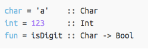
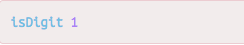
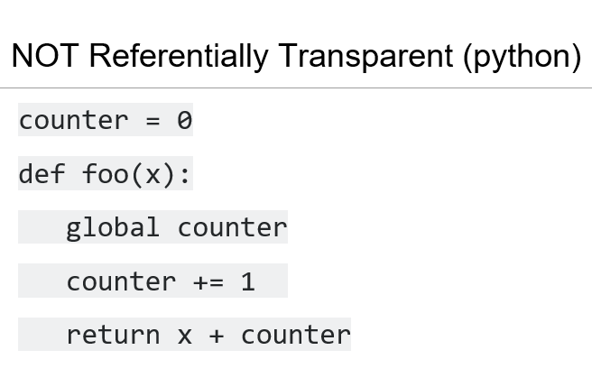
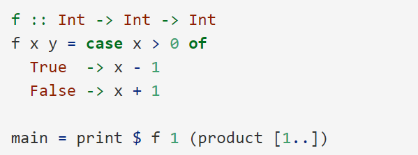
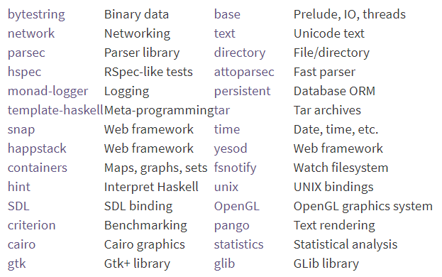
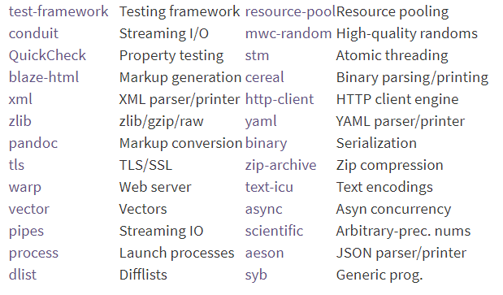
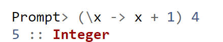
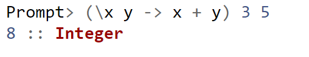
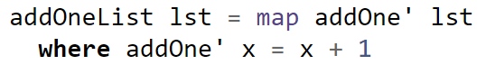
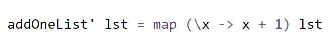

Type determined at compile time, cannot be changed
Declaring type is actually optional
Other statically typed languages: Java, C++, Russ
Python and Ruby are dynamically typed → type interpreted at runtime
Generally slower runtime
Avoids run-time errors, will be caught at compile-time


Purely Functional
Purely Functional vs. Imperative Languages
Imperative - computer is given a sequence of tasks; you can set a variable a to 5 and then set it to something else.
Purely Functional - you tell the computer what stuff is, defining functions, not what to do. If you set a to 5 you CANNOT set it to something else later.
Functions are First-Class
Functions can be passed in as arguments to other functions, returned from functions, assigned from variables, and held in data structures, such as lists.
Referential Transparency
A function has no side effects.
Function is called twice with the same parameters, it's guaranteed to return the same result.
Ex ) foo(x) + foo(x) = 2 * foo(x)

Lazy
Expressions will not be evaluated until their value is needed
Boolean short circuiting comes for free with this!
Improves runtime
Call by name evaluation: A functions arguments are not evaluated. Rather, they are substituted into the function itself.
Example: Making an infinite list of natural numbers, and then selecting only the 10th element. Haskell will not commit to memory all of the other elements until it needs to.
Sharing: Pointers to an object will not create copies of that object

Packages


Lambda Expressions
Creating functions without giving them explicit names → Anonymous functions


Without lambda expression:

With lambda expression:

Advantages
Short, concise
Easy to reason about the program’s behavior due to referential transparency
Lambda expressions
Lazy Evaluation → infinite data structures
Type Inference
Clear, intuitive syntax
Fast runtime performance
Glasgow Haskell Compiler (GHC) provides interpreter so scripts can be run without compiling